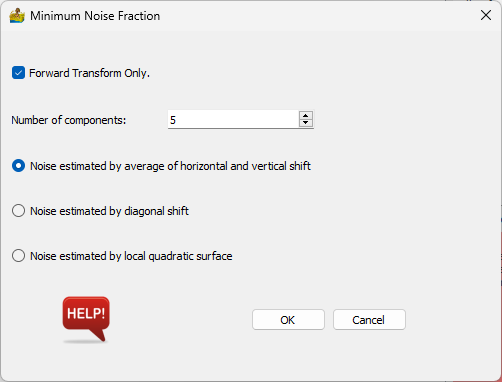

Minimum Noise Fraction¶
This module performs Minimum Noise Fraction (MNF) on data, with the aim of performing noise filtering. Upon completion of the calculation, a graph of explained variance is displayed, which can be used to assist in defining the optimal number of components for filtering.
Options:
Forward Transform Only - This outputs the forward transformed data with the specified number of components.
Number of components - Number of components used.
Noise estimated by average horizontal and vertical shift - This is the noise estimation as performed in ENVI.
Noise estimated by diagonal shift.
Noise estimated by local quadratic surface - Option recommended by Berman et al (2012), but slower.

References¶
Berman, M., Phatak, A., & Traylen, A., 2012, Some invariance properties of the minimum noise fraction transform. Chemometrics and Intelligent Laboratory Systems, 117, 189-199.
Ientilucci, E., 2003, Comparison and Usage of Principal Component Analysis (PCA) and Noise Adjusted Principal Component (NAPC) Analysis or Maximum Noise Fraction (MNF).